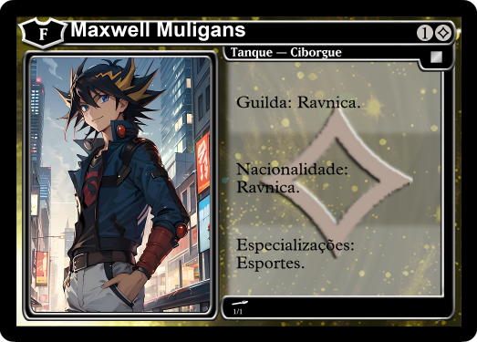

-
Kori Tatsuhiko
Dragão/Ascendido/Aspecto do Dragão
Um dragão que aprendeu cedo a se virar para tornar seu sonho realidade, o fato de conseguir ajudar o máximo de pessoas possíveis através de seus poderes mágicos e sua capacidade medicinal. Se tornou um dos médicos mais influentes de runeterra, passando séculos a se concentrar em seu sonho, ter os melhores hospitais que o mundo poderia presenciar.
-
Alexander Murphy
Ciborgue
Um ciborgue criado pela ZECT, uma empresa militar de segurança de Ravnica. Sua personalidade é séria, como um padrão dos ciborgues e ele tem uma irmã chamada Eilietta Murphy
-
Eilietta Murphy
Ciborgue
Uma ciborgue criada pela ZECT, uma empresa militar de segurança de Ravnica. Sua personalidade é séria, como padrão dos ciborgues e ela tem um irmão chamado Alexander Muprhy.
-
Alluth
Ascendido
Um ascendido que está disposto a acabar com a maldade do mundo em prol de Shurima.
-
Maxwell Muligans
Ciborgue
Era um humano comum, mas que aconteceu uma tragédia em Ravnica, mais precisamente na parte baixa da cidade, onde esse incidente acabou destruindo seu corpo e a de seus amigos também. Ele foi ajudado pela ZECT, conseguiram salvar uma parte essencial de seu corpo transformando-o em ciborgue.